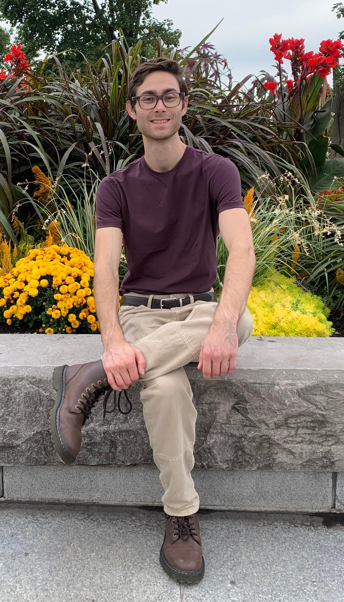

I am a Computer Science PhD student at the University of Central Florida (UCF) studying under Dr. Paul Gazzillo.
My research is on automatically translating C preprocessor macros to C code.

What I'm Into
- Programming languages.
I have been programming since high school, and genuinely enjoy learning about programming languages.
From scripting languages like Python to formal proof assistants like Coq, I am familiar with a broad array of languages and language paradigms.
My overall research goal is to develop tools that use make it easier for software developers to craft robust, secure software.
- Reading.
- Running and occasionally playing tennis.
- Video games and card games.